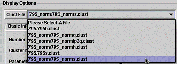
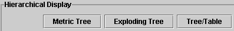
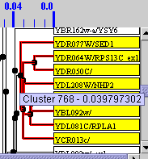
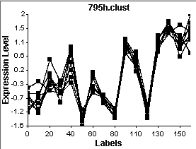
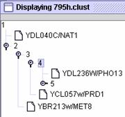
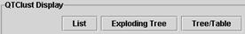
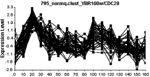
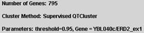
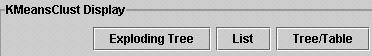

Display...

Once you have create a cluster or two, you can display them. First, choose the cluster
file you want to display. Each type of cluster
has its own display options.
| Hierarchical Cluster Display |  |
You have three options for display, each of
which has its own options.
 Metric Tree is unique to hierarchical clustering. It produces a dendrogram with nodes plotted at indicated thresholds. The smaller the threshold number, the higher the correlation coefficient. You can click on a branch point
and highlight all the genes within
this cluster as shown. If you mouse
over the branch point, you can see
the exact threshold which is 1 minus
the correlation coefficient (~0.96).
You can plot this cluster and as you
would image with this high a
correlation coefficient, the normalized data plot as a very tight group.
Exploding Tree is an efficient way to show clusters and gradually expand the contents of each node. In this example, there is one gene and then all other genes are within node number 2. As you click on the nodes, they expand and if you click a second time, they collapse. You can explode the node completely by highlighting the number and clicking on the explode button, or explode it one at a time by clicking on the node directly. You can also plot any cluster within a node by clicking on the "Plot Node As Group" button.
Tree/Table is a way to combine the Table view and the dendrogram. The dendrogram is on the far left and the colored table (the majority of the window) is displayed on the right (view not shown).
| QT Cluster Display |  |
QT cluster also allows Exploding tree and Tree/Table, but it has replaced the metric tree with List. List allows you to see the name of the root gene for each cluster. If you click on the root gene, then all the genes within this cluster are displayed. You can plot this cluster as shown here.

| Supervised (QT) Cluster Display |  |
Supervised Cluster hast the same display options as regular QT Cluster. However, when you are choosing your display, you should note the box that indicates what threshold was used and which gene was used as the root. In this case, ERD2, the KDEL receptor exon 1 was used as the root for this cluster with a correlation coefficient of 0.95 (plot not shown).
| K-Means Cluster Display |  |
The three displays possible for K-means cluster display are described above.